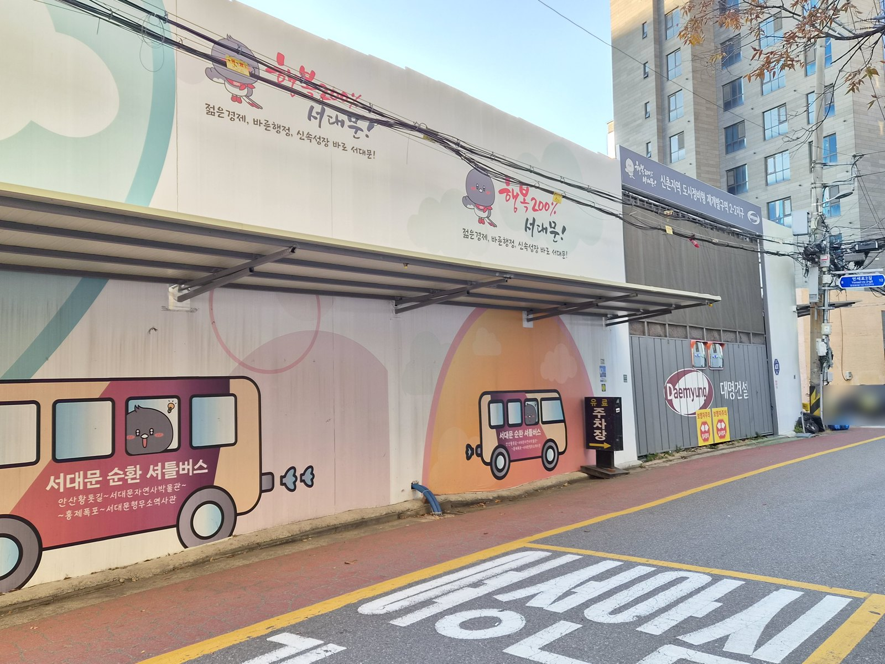

신촌로터리 현대백화점 옆,
가림막 위로 빨간 크레인이 올라갔어요.
「신촌지역 도시정비형 재개발구역 2-2지구」.
22층 오피스텔이 들어서는 자리예요.
얼마 전 분양 직원분이 사무실에 다녀가셔서,
현장 표지판이랑 같이 팩트만 정리해 볼게요.
안녕하세요. 착한언니복덕방 신촌자이엘라&마포그랑자이 (착한언니) 부동산입니다.
※ 분양 조건은 공식 분양 공고 전 안내 기준이라 바뀔 수 있어요.
투자 권유가 아니라 정보 정리예요.
| 1. 어디에, 뭘 짓나요? |

📷 [이미지 업로드: 신촌 2-2지구 현장 — 신촌로터리 대로변, 크레인이 올라간 상태 (직접 촬영 2026.11) → 오른쪽 '이미지 내려받기']
| 항목 | 내용 |
| 위치 | 서울 서대문구 창천동 18-42 일원 (신촌로터리·현대백화점 유플렉스 옆) |
| 용도지역 | 일반상업지역 · 지구단위계획(신촌지구) |
| 규모 | 지하 5층 ~ 지상 22층 · 철근콘크리트 |
| 용도 | 업무시설(오피스텔) · 근린생활시설 |
| 대지 / 연면적 | 1,556.90㎡ / 17,850.22㎡ |
| 건폐율 / 용적률 | 56.59% / 834.81% |
| 공사기간 | 2026.1.20 ~ 2028.6.30 |
| 발주 · 시공 | (주)원경개발 · (주)대명건설 |
현장 건축허가표지판(서대문구청) 기준

📷 [이미지 업로드: 건축허가표지판 (직접 촬영) → 오른쪽 '이미지 내려받기']

📷 [이미지 업로드: 연세로2길 쪽 가림막 (직접 촬영) → 오른쪽 '이미지 내려받기']
✔ 재개발이라고 해서 아파트 단지가 아니에요. 신촌지역 도시정비형 재개발은 지구 단위로 건물 한 동씩 짓는 방식이라, 여기는 오피스텔 한 동이에요
✔ 길 건너 노고산동(마포구)은 이제 철거 단계인데, 여기는 이미 올라가는 중이에요
| 2. 분양 조건 (분양 직원 안내 기준) |
✍️ [직접 채우기: 분양가 표 — 타입(전용㎡·구조) / 분양가 / 평당가 · 계약금·중도금 조건 · 분양 일정 (대표님 자료 받으면 채우기, 공식 공고 전 안내 기준으로 표기)]
✔ 공사 완료 예정이 2028년 6월이라, 입주는 그 이후예요. 지금 계약하면 약 1년 반~2년을 기다리는 구조예요
| 3. 신촌 입지, 세 가지만 기억하세요 |
| 신촌 입지 | |
| ① 대학가 | 연세대·이화여대·서강대가 걸어서 닿는 거리 (홍익대도 한 정거장) — 학생·교직원·유학생 수요가 매년 새로 들어와요 |
| ② 여의도 | 신촌로터리에서 서강대교만 건너면 여의도 — 업무지구 직장인 수요 |
| ③ 강남 | 신촌역 2호선 한 번에 강남역까지 (환승 없음) · 경의중앙선 신촌역 · 공항철도 홍대입구 한 정거장 |
역·노선 기준 · 실제 이동 시간은 시간대·교통 상황에 따라 달라요

📷 [이미지 업로드: 신촌로터리 — 서강대교(여의도)·서강대·연세대 방향이 한 교차로에 (직접 촬영) → 오른쪽 '이미지 내려받기']
오피스텔은 결국 누가 살러 오느냐가 제일 중요한데,
신촌은 학생 수요에 여의도·강남 직장인 수요까지 겹쳐요.
이건 신촌의 오래된 장점이에요.
| 4. 착한언니 체크 — 계약 전에 꼭 보세요 |
분양가가 적정한지
✔ 주변 신축 오피스텔 실거래가·월세와 평당가를 비교해 보세요 (신촌 신축 오피스텔 시세는 따로 정리해 드릴게요)
✔ 전용률(계약면적 중 실제 쓰는 면적)을 꼭 확인해요 — 오피스텔은 아파트보다 낮은 편이에요
세금·대출
✔ 오피스텔 취득세는 4.6%(지방교육세·농특세 포함)로 아파트와 달라요
✔ 주거용으로 쓰면 주택 수에 들어갈 수 있어서 다른 집 세금에 영향이 있어요 — 계약 전 세무 상담 권해요
✔ 중도금·잔금 대출 조건과 DSR을 미리 확인해요
임대를 생각하신다면
✔ 2028년 입주 시점에 주변 공급(노고산동 3지구·4-10지구 등)이 어떻게 겹치는지도 같이 보세요
✔ 관리비·주차 대수·근생(상가) 구성도 세입자 만족도에 영향이 커요
| 5. 정리하면 |
✔ 신촌 2-2지구: 창천동 18-42, 지하 5층~지상 22층 오피스텔·근생, 2026.1 착공 → 2028.6 공사 완료 예정 (시공 대명건설)
✔ 입지는 대학가 + 여의도 + 2호선 강남, 신촌에서 검증된 조합이에요
✔ 판단은 분양가 vs 주변 신축 시세로 — 숫자 나오면 비교표로 다시 정리할게요
신촌 오피스텔 매매·임대 상담은 자이엘라점에서 도와드려요.
새 글 알림을 받고 싶으시다면 블로그 이웃 추가 해 두세요. 길 건너 노고산동 재개발 이야기는 「신촌 노고산동 재개발 2026」에서 보세요.
카카오톡 채널 착한언니복덕방 친구 추가 후 매수·매도·전월세 상담을 편하게 남겨 주세요.
인스타그램 @goodsister4080 에서는 이런 내용을 카드뉴스로 한눈에 정리해요.
쉽고 꾸준하게, 꼭 부자되세요!
────────────────
출처: 현장 건축허가표지판(서대문구청, 2026.11 촬영) · 분양 조건은 분양 직원 안내 기준(공식 분양 공고 전) · 투시도·조감도는 설계 저작물이라 싣지 않았어요 · 이 글은 투자 권유가 아니에요
착한언니복덕방 | 신촌자이엘라 & 마포그랑자이 부동산
4인 전원 공인중개사 · 중개보조원 없음
중개사무소: 신촌자이엘라부동산공인중개사사무소
대표 공인중개사: 신수경 · 등록번호 11410-2019-00062
소재지: 서울특별시 서대문구 대현동 104-36, B101호 · 연락처: 02-364-4080
카카오톡 채널: pf.kakao.com/_xcxoBxnX
붙여넣는 법 (PC 스마트에디터 ONE)
- ① 본문 전체 복사 → 글쓰기 화면 본문에 Ctrl+V
- ② 표·굵게·글자색·형광·가운데 정렬은 그대로 들어가요 (붙여넣은 뒤 표 색이 빠지면 표 선택 → 셀 배경색만 다시 지정)
- ③ 주황 점선 문장은 인용구로 바꿔 주세요: 붙여넣은 문장 지우고 → 상단 [인용구] → 오른쪽 목록의 「문장 복사」로 붙여넣기
- ④ 📷 파란 줄 = 사진 넣을 자리, ✍️ 빨간 줄 = 직접 채울 자리 → 채운 뒤 줄 삭제
- ⑤ 맨 아래 법정 표시는 「내 템플릿」에 저장해 둔 서명과 같아요 — 템플릿을 썼다면 이 부분은 지워도 돼요
인용구로 바꿀 문장
- 인용구 · 기본 한 줄 요약 창천동 18-42 · 지하 5층~지상 22층 오피스텔 · 2026.1 착공 → 2028.6 공사 완료 예정 · 대학가 + 여의도 + 2호선
이미지 내려받기 (직접 업로드)

발행 정보
- 제목(BEST): 신촌 2-2지구 오피스텔 분양 정리｜신촌로터리 22층, 2028년 완공 (분양가·입지·체크포인트)
- 제목(대안): 신촌 신축 오피스텔 분양 2026｜창천동 18-42, 연대·이대·서강대 + 여의도·강남 2호선
- 태그: 신촌오피스텔, 신촌오피스텔분양, 신촌2-2지구, 창천동오피스텔, 신촌신축오피스텔, 신촌로터리, 신촌재개발, 착한언니복덕방
- ⚠️ 채울 것: 분양가·타입·일정 (대표님 자료 / 팸플릿 사진) · 단지 브랜드명 (팸플릿 확인 후 제목에 넣으면 건물명 검색 유입에 유리)
- 사진 4장: 현장 크레인·허가표지판·가림막·신촌로터리 표지판 — 번호판·얼굴 블러, 투시도 패널·분양 팸플릿 표지는 제외
- 톤: 분양 광고처럼 보이지 않게 — 장점(입지)과 체크포인트(분양가·세금·공급)를 같이